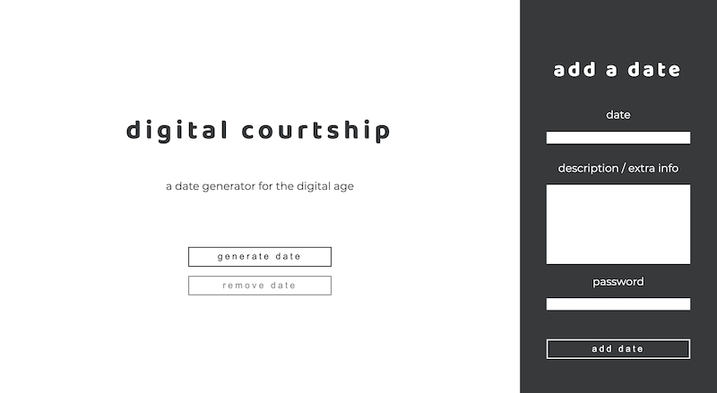

Hi, I'm Kiara (she/her). I'm a classical oboist, web designer and developer, and educator.
I'm a fourth-year undergraduate BMus student at the University of Victoria majoring in musicology and sound studies with a minor in psychology. I'm passionate about accessibility and diversity in the arts and hope to use technology to make music performance spaces more accessible for neurodivergent artists.
I'm currently working as a UX designer for LifeCycles and the program coordinator for HighTechU.
Volunteer and self-scheduling portal for LifeCycles, a project dedicated to sustainability and increasing food security in Greater Victoria.
Redesign soft launched October 2022. Work is ongoing.
The offical website of Music Discoveries, a bandcamp for middle school students hosted by the University of Victoria's Student Music Educators Association in collaboration with the UVic School of Music.
Launched September 2021. Currently maintained by the MD team.
The offical website of HighTechU, an innovative technology learning community for high school students in British Columbia based in the University of Victoria's Department of Electrical Engineering.
Original design launched in October 2018. Maintained by the HighTechU team since 2020; redesigned by HighTechU in 2022.

Social media web app designed with community in mind. Digital Courtship makes it easier to come together in the digital age.
While originally concieved as a simple date generator, this project is planned to undergo re-development / overhaul as a full social platform designed to facilitate easier ways to make plans with friends.